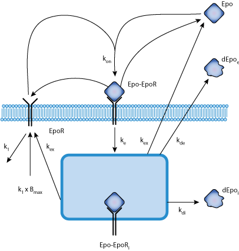

This CellML model runs in OpenCell and COR to closely reproduce published results. The first model is the Core Model A. The second model is the Core Model A + k_mob. The third model is the Auxiliary Model B.
Cell surface receptors convert extracellular cues into receptor activation, thereby triggering intracellular signaling networks and controlling cellular decisions. A major unresolved issue is the identification of receptor properties that critically determine processing of ligand-encoded information. We show by mathematical modeling of quantitative data and experimental validation that rapid ligand depletion and replenishment of the cell surface receptor are characteristic features of the erythropoietin (Epo) receptor (EpoR). The amount of Epo-EpoR complexes and EpoR activation integrated over time corresponds linearly to ligand input; this process is carried out over a broad range of ligand concentrations. This relation depends solely on EpoR turnover independent of ligand binding, which suggests an essential role of large intracellular receptor pools. These receptor properties enable the system to cope with basal and acute demand in the hematopoietic system.
The original paper reference is cited below:
'Covering a Broad Dynamic Range: Information Processing at the Erythropoietin Receptor', Verena Becker, Marcel Schilling, Julie Bachmann, Ute Baumann, Andreas Raue, Thomas Maiwald, Jens Timmer, Ursula Klingmüller, 2010 Science, 234, 1-35. PubMed ID: 20488988
|  |
| Schematic diagram depicting the Becker model |